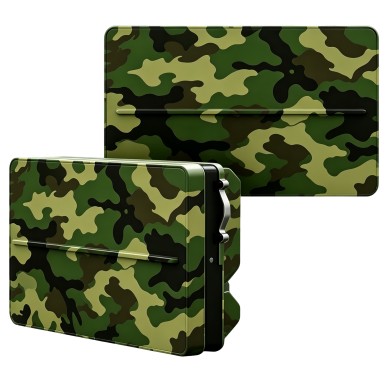
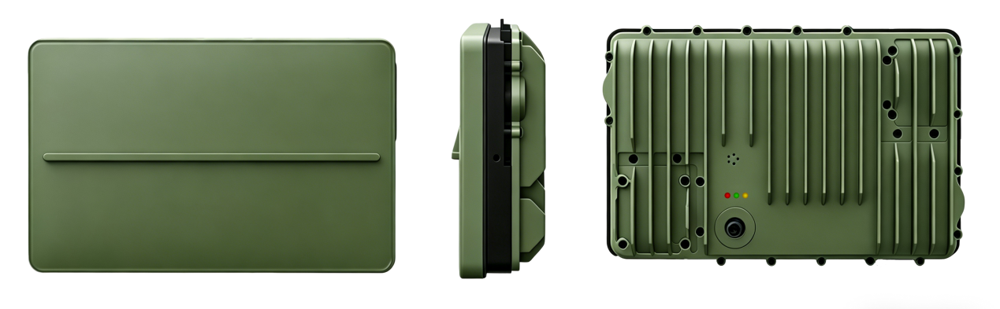
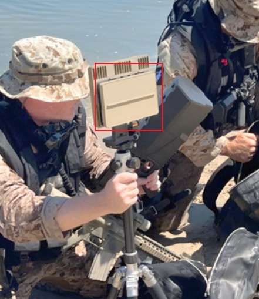
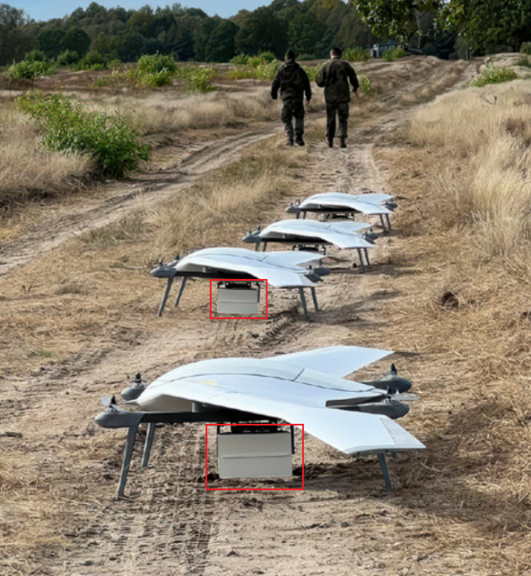
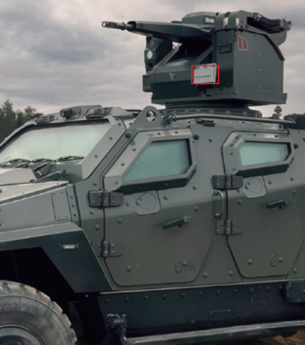
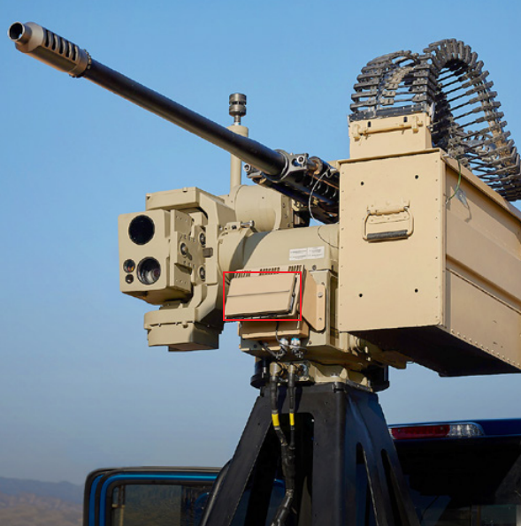

24 GHz 毫米波雷达
便捷式4D有源相控阵雷达
工作于 24–24.25 GHz 频段，采用有源相控阵（AESA）技术和 FMCW 波形体制，可获取目标距离、速度、方位角与高度四个维度的信息。
机身尺寸为 18 × 12 × 6 cm，重量低于 1.5 kg。支持三角支架、无人机及车辆平台安装，使用 24 V 直流供电，资料列示平均功耗低于 70 W。
产品外观示意


技术参数
探测与覆盖
- 频段范围
- 24–24.25 GHz
- 波形体制
- FMCW
- 最远探测距离
- 无人机：1.0 km人：2.0 km车辆：3.5 km
- 方位覆盖
- ±60°
- 俯仰覆盖
- 0–80°
精度与刷新
- 方位精度
- 0.5°
- 俯仰精度
- 1°
- 距离精度
- 1 m
- 速度精度
- 0.5 m/s
- 刷新指标（TAS）
- 1（0.5）Hz
- 跟踪帧率
- 10 Hz
原资料标注为“刷新周期（TAS）”，具体定义请咨询确认。
结构与电气
- 尺寸
- 18 × 12 × 6 cm
- 平均功耗
- <70 W
- 重量
- <1.5 kg
- 供电
- 24 V DC
安装方式与场景示意查看资料示意图
以下为原资料中的安装与场景示意图，用于展示安装形式。



